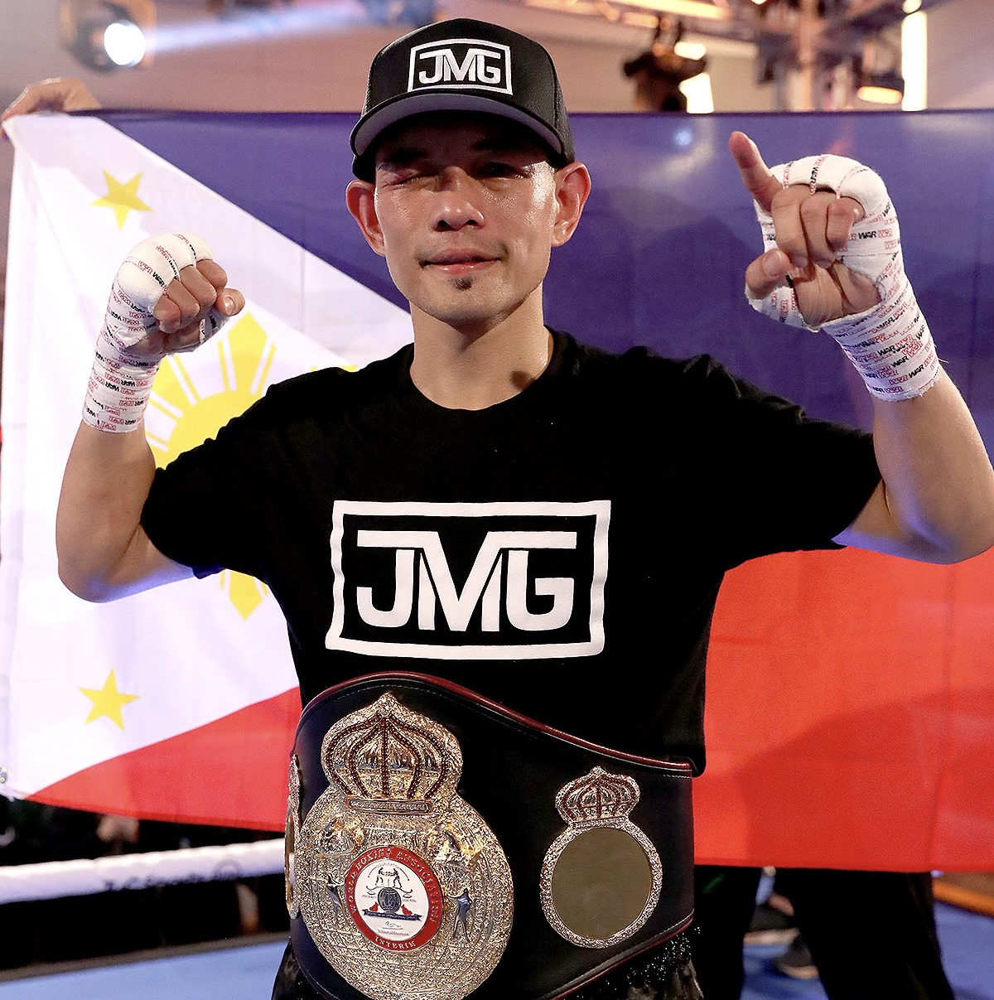
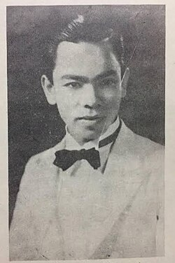
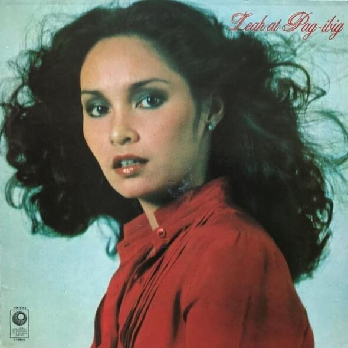
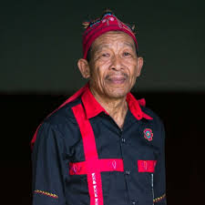
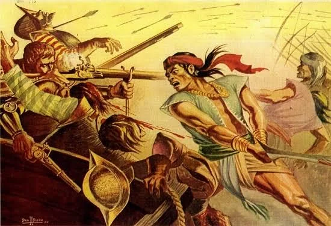
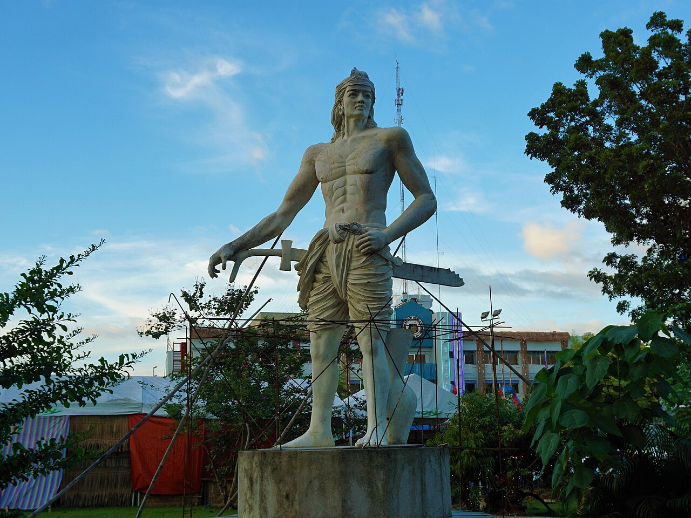
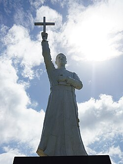

The remarkable individuals born in — or shaped by — Caraga Region XIII who have left their mark on the Philippines and the world.
Born in Kibawe, Bukidnon (raised in General Santos City), Manny Pacquiao is the only eight-division world boxing champion in history — a feat never accomplished before or since. He held world titles in flyweight through super welterweight, defeating legends including Oscar De La Hoya, Ricky Hatton, Miguel Cotto, and Shane Mosley. Internationally recognised as one of the greatest boxers of all time, he also served as a Congressman and Senator of the Philippines and ran for President in 2022.
One of the earliest elected governors of the Province of Agusan following its creation in 1914, Aquino was instrumental in laying the administrative and infrastructural foundations of what is now Agusan del Norte. He championed the development of Butuan City as a regional centre and advocated for the rights of indigenous communities in the Agusan River valley during the American colonial period.
Born in Surigao City, Valencia built a distinguished political career that spanned decades. He served multiple terms as Governor of Oriental Mindoro and was a prominent figure in Philippine politics during the Marcos era and beyond. His roots in Surigao del Norte made him a symbol of Caraga's contribution to national governance.
A native of Surigao del Norte, Justice Glenda Organo rose through the judiciary to be appointed as an Associate Justice of the Supreme Court of the Philippines — one of the highest judicial positions in the land. Her appointment was a landmark for Caraga, representing the region at the apex of the Philippine justice system.
Born in Anao-Aon, Surigao del Norte, Mark Magsayo followed in the tradition of great Filipino boxers to claim the WBC Featherweight Championship of the World in January 2022 — defeating Gary Russell Jr. in a stunning performance. Magsayo is recognised as one of the brightest Filipino boxing prospects of his generation.

Talibon, Bohol / Mindanao BoxingAlthough born in Talibon, Bohol, Nonito Donaire spent formative years in Mindanao. "The Filipino Flash" won world titles in four weight divisions. His rivalry with Naoya Inoue in the 2019 WBSS bantamweight final is considered one of the greatest fights of the modern era.
Hailing from Butuan City, Nestor Colonia became one of the most accomplished chess players to emerge from Mindanao. He earned the FIDE Master title through consistent performance in national and regional championships. Colonia remains active as a coach and advocate for chess education in public schools.

Surigao del Norte MusicBorn in Surigao City, Felipe Padilla de León was declared a National Artist for Music in 1997. He is best known for composing the iconic protest anthem "Bayan Ko" (My Country) — the rallying cry of the Philippine opposition during the Marcos martial law era. His classical compositions and folk arrangements cemented his place as one of the Philippines' most important musical voices.

Agusan del Norte EntertainmentWith roots in Butuan City, Leah Navarro built a successful career in Philippine entertainment as a singer and TV actress before becoming one of the country's most prominent civil society voices. She is widely recognised for her outspoken advocacy for human rights, press freedom, and democratic governance in the Philippines.

Surigao del Sur Visual ArtsA native of Tandag City, Romulo Caballero is among the most celebrated visual artists to emerge from Surigao del Sur. His works draw heavily from the indigenous Manobo and Mandaya visual traditions — intricate geometric patterns and ritual imagery rendered in vivid oil and mixed media. His paintings have been exhibited in Manila, Cebu, and internationally.

Butuan City HistoryRajah Kiling was the ruler of the powerful Rajahnate of Butuan — one of the earliest and most advanced pre-colonial kingdoms in the Philippines. In 1001 AD, he sent an official envoy to Emperor Zhenzong of the Song Dynasty in China, making Butuan the first Philippine polity to establish formal diplomatic relations with a major world empire. His kingdom was a gold-trading maritime state whose artefacts have been recovered in their hundreds from the Butuan archaeological sites.

Butuan City HistoryRajah Kolambu was the Rajah of Butuan when Ferdinand Magellan's fleet arrived in the Philippines in 1521. He was one of the first Philippine rulers to establish formal contact with the Spanish expedition — exchanging gifts, participating in a blood compact, and guiding Magellan's fleet to Cebu. He occupies a critical place at the hinge of Philippine pre-colonial and colonial history.

Agusan del Norte ReligionA Spanish Jesuit priest who arrived in Butuan in 1877 and spent over four decades transforming the Caraga region. Fr. Urios established churches, schools, and healthcare missions throughout the Agusan River valley. He founded what became the University of San Carlos network's Mindanao campuses and is widely venerated in Butuan as an apostle of education.
The Diocese of Butuan — established in 1951 — was a landmark moment in the Catholic history of Caraga. Its first bishop oversaw the rapid expansion of Catholic education, charitable institutions, and parish infrastructure throughout the Agusan region, laying the foundations for Butuan's role as the spiritual centre of northeastern Mindanao.
One of the pioneering figures in Caraga's modern mining and agribusiness sector, Andres Lim built one of the region's earliest large-scale nickel mining operations in Surigao del Norte. His investments in coconut, abaca, and timber processing helped diversify Caraga's economy during the mid-20th century and created thousands of jobs for local communities.
Try selecting a different category filter above.
The people of Caraga have always looked outward — to the sea, to the world — while remaining rooted in the rich soil and ancient waters of this land.
— On the spirit of Caraga's people
Caraga is home to countless remarkable individuals across every field. If you know of a notable personality from the region we should feature, we'd love to hear from you.